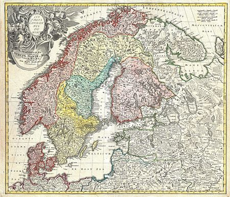
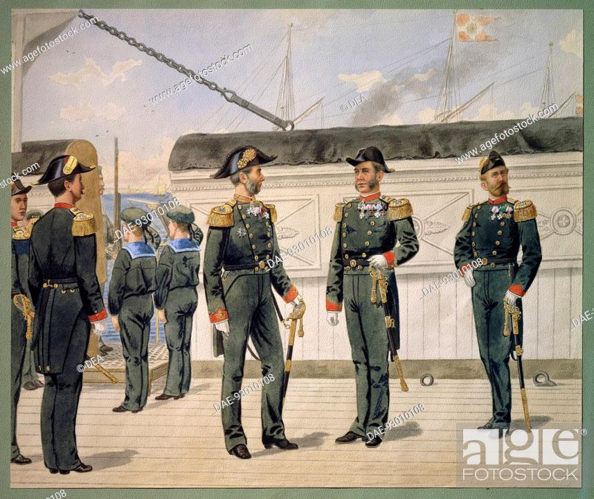

History of Denmark
The history of Denmark as a unified kingdom began in the 8th century, but historic documents describe the geographic area and the people living there—the Danes—as early as 500 AD. These early documents include the writings of Jordanes and Procopius. With the Christianization of the Danes c. 960 AD, it is clear that there existed a kingship. Queen Margrethe II can trace her lineage back to the Viking kings Gorm the Old and Harald Bluetooth from this time, thus making the Monarchy of Denmark the oldest in Europe.[1] The area now known as Denmark has a rich prehistory, having been populated by several prehistoric cultures and people for about 12,000 years, since the end of the last ice age.

Denmark's history has particularly been influenced by its geographical location between the North and
Baltic seas,
a strategically and economically important placement between Sweden and Germany,
at the center of mutual struggles for
control of the Baltic Sea (dominium maris baltici).
Denmark was long in disputes with Sweden over control
of
Skånelandene and with Germany over control of Schleswig (a Danish fief) and Holstein (a German fief).

Eventually, Denmark lost these conflicts and ended up ceding first Skåneland to Sweden and later
Schleswig-Holstein
to the German Empire. After the eventual cession of Norway in 1814, Denmark retained
control of the old Norwegian
colonies of the Faroe Islands, Greenland and Iceland. During the 20th century,
Iceland gained independence, Greenland
and the Faroese became integral parts of the Kingdom of Denmark
and North Schleswig reunited with Denmark in 1920 after
a referendum. During World War II, Denmark was
occupied by Nazi Germany, but was eventually liberated by British
forces of the Allies in 1945,[2] after which it
joined the United Nations. In the aftermath of World War II,
and with the emergence of the subsequent Cold
War, Denmark was quick to join the military alliance of NATO as a
founding member in 1949.
A banner with a white-on-red cross is attested as having been used by the kings of Denmark since
the 14th century.
An origin legend with considerable impact on Danish national historiography connects the introduction of the flag to the Battle of Lindanise of 1219.
The elongated Nordic cross reflects the use as a maritime flag in the 18th century.The flag became popular as a national
flag in the early 16th century.
Its private use was outlawed in 1834, but again permitted by a regulation of 1854.
The flag holds the world record of being the oldest continuously used national flag